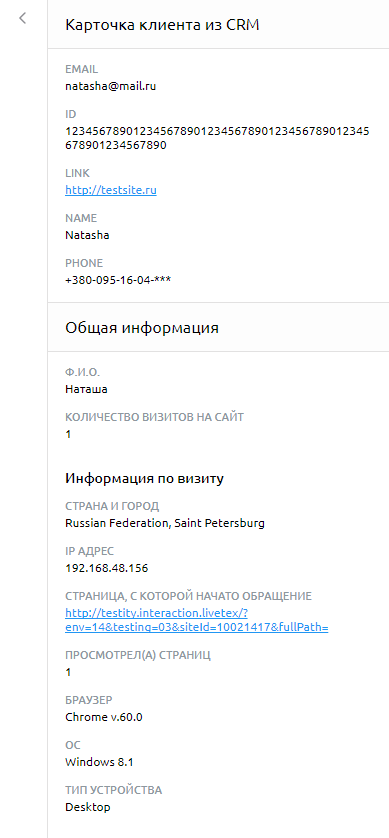

Интеграция CRM
Руководство по интеграции профиля персоны внешней системы (напр. CRM) с LiveTex.
Компоненты
Компоненты клиента LiveTex
- Webserver - Сервер клиента
- WebApp - Веб приложение клиента (HTML, JS)
- API — API для получения профиля персоны (опционально)
LiveTex Widget
- API - API виджета LiveTex (JavaScript в браузере)
LiveTex backend
- WAPI — API для Widget
- Person-Service - Сервис профиля персоны
- PFS — Сервис доступности фич
OWS (OmniWorkSpace)
- App — Рабочее место оператора (пульт)
Взаимодействие компонентов
Добавление профиля персоны от клиента LiveTex
Получение информации о профиле персоны из внешней системы оператором LiveTex
Получение профиля персоны на стороне клиента LiveTex
Возможны следующие сценарии получения профиля персоны со стороны клиента LiveTex:
- Атрибуты персоны формируются на серверной стороне клиента LiveTex и отдаются в HTML/JS.
- Веб приложение клиента (JS) запрашивает профиль персоны у своего API.
Добавление профиля персоны в LiveTex
- Подписаться на событие Widget
CONVERSATION_STARTED. - Вызвать метод
setAttributesв обработчикеonConversationStarted.
const onConversationStarted = (ev) => {
const personId = findPersonId(dom) // '550e8400-e29b-41d4-a716-446655440000'
const attributes = findAttributes(dom) // [{name: 'phone', value: '+79005001234'}]
const hash = findHash(dom) // 'serverside-generated-hash'
const onSuccess = (_) => console.log('success')
const onFailure = (e) => console.log(`failure: ${e.message}`)
LiveTex.addAttributes(personId, attributes, hash, onSuccess, onFailure)
}
const descriptor = LiveTex.addEventListener(
LiveTex.Event.CONVERSATION_STARTED,
onConversationStarted
)
Для добавления атрибутов персоны клиент LiveTex должен передать следующие параметры:
- id персоны в системе клиента
- набор атрибутов вида ключ-значение
- хеш строка
Хеш строка
Атрибуты персоны должны быть подписаны секретным ключём на стороне сервера клиента LiveTex.
Пример алгоритма на языке Scala:
/**
* Create hash string for attributes
*
* 1. sort attributes by keys then sort by values
* 2. concat each key+value pair
* 3. concat all elements from previous step
* 4. concat with *secret*
* 5. create sha256 hash
*
* @param attributes Seq of (key, val) tuples
* @param secret Secret string for account
* @return
*/
def createHash(attributes: Seq[(String, String)], secret: String): String = {
val attributeValuesWithSecret = attributes
.map(x => x._1 + x._2)
.sorted
.mkString
.concat(secret)
sha256Hash(attributeValuesWithSecret)
}
Атрибуты без подписи или с невалидной подписью не передаются в подсистему LiveTex извне.
Секретный ключ
Секретный ключ (UUID строка) для подписи атрибутов можно получить в личном кабинете клиента LiveTex.
Получение информации о персоне оператором LiveTex
